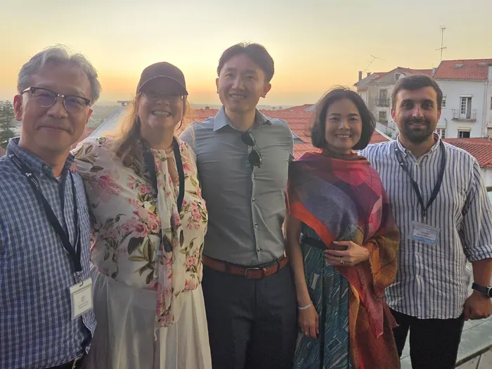

17th International Conference on Organic Electronics (ICOE 2025) — Coimbra, Portugal
Insights into structural behaviors of conjugated polymers with side-chain functionalization: insights from multiscale modeling
Conference page →